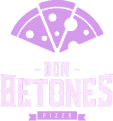
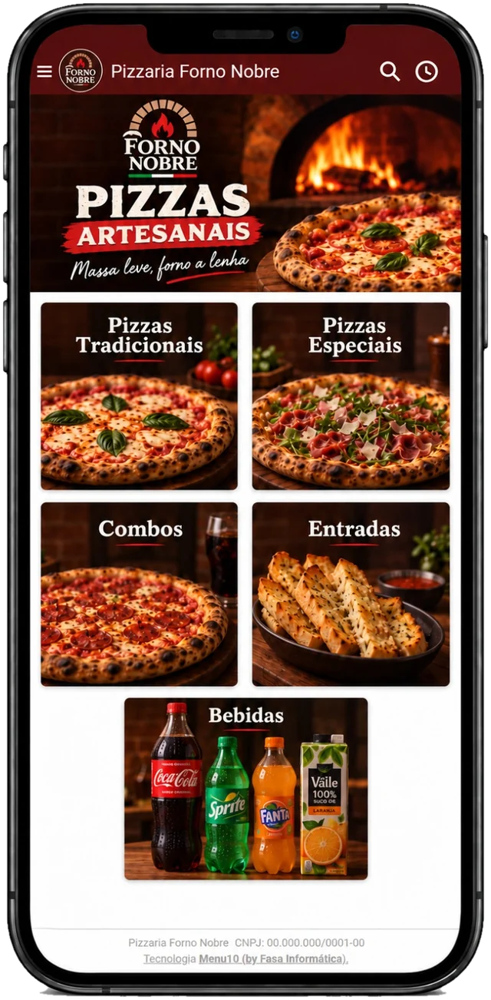

Seu delivery ganha forma.
Cardápio digital com a cara do seu restaurante, sem comissão por pedido. Cozinha, entregas, iFood, WhatsApp e nota fiscal num sistema só.
Mova o mouse sobre as partículasToque nas partículas
Onde o Menu10 está

Veja como seu cardápio pode ficar na sua pizzaria.
Escolha um dos hexágonos para trocar o cardápio.
Quero o meu assim
Tudo que o seu delivery precisa, sem comissão.
-
Sem taxa por pedido
Você vende pelo seu próprio cardápio, sem comissão como nos aplicativos de entrega.
-
Tudo num sistema só
Cardápio, cozinha, entregas, iFood, WhatsApp, nota fiscal e relatórios juntos.
-
IA no WhatsApp
Atendimento automático no WhatsApp, com avaliador de segurança e registro das conversas.
-
Suporte especializado
Equipe especializada no Menu10, que atende pelo WhatsApp e presencialmente.
Tudo o que o Menu10 faz, em um só sistema.
Veja o que muda no dia a dia do seu restaurante.
Sem o Menu10
Com o Menu10
-
Sem o Menu10: Pedido anotado no papel, na correria
Com o Menu10: Pedido cai sozinho na tela da cozinha
-
Sem o Menu10: WhatsApp lotado e cliente esperando resposta
Com o Menu10: O robô do WhatsApp responde na hora
-
Sem o Menu10: Comissão do aplicativo em todo pedido
Com o Menu10: Pedido direto no seu cardápio, sem comissão
-
Sem o Menu10: Cliente que pediu uma vez e sumiu
Com o Menu10: Cashback e cupom trazem o cliente de volta
-
Sem o Menu10: Nota fiscal digitada depois, uma por uma
Com o Menu10: A NFC-e sai direto do pedido
-
Sem o Menu10: Só no fim do mês você descobre como foi
Com o Menu10: Relatório mostra o que vendeu, todo dia
No fim do dia, você sabe exatamente como foi.
Relatórios que mostram o que vendeu, quando e para quem — sem planilha.
Telas reais do sistema, com os dados de um restaurante cliente.
Também no painel:
- Faturamento e ticket médio
- Mapa de calor por bairro
- Raio-X do negócio
- Comissão da equipe
Suporte de perto, aqui em Cerquilho.
O Menu10 é desenvolvido pela Fasa Informática. Você fala com a nossa equipe pelo WhatsApp e, quando precisar, a gente atende presencialmente.
Seg a Sex, 8h às 17h30 · Sáb, 8h às 12h
Horário de Brasília
- (15) 99698-1803
- Endereço
- Av. João Pilon, 307 - 1º andar, Salas 07/08 - Cerquilho - SP
Carregando o mapa… Se ele não aparecer, use os botões do Google Maps ou do Waze.
Veja o Menu10 funcionando no seu restaurante.
Chame no WhatsApp e marque uma demonstração sem compromisso.
Pedir demonstração no WhatsApp